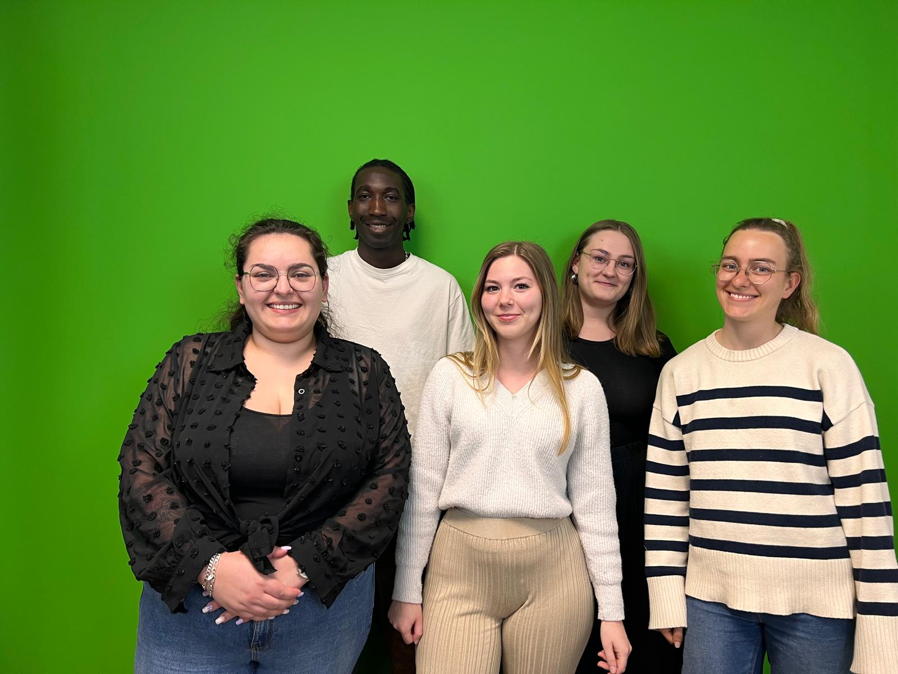

A propos de nous

L'équipe d'Art'venture Box est constituée de cinq membres étudiants, chacun occupant un rôle spécifique au sein de l'entreprise. Luna assume la fonction de chargée de projets, Flavie est en charge du développement digital, Roxane occupe le poste de Responsable marketing, Aly est le développeur full stack du groupe, tandis que Margaux exerce en tant que Designer.
Art'venture Box est une entreprise créative fondée par Luna inspirée par sa propre expérience. Confrontée au coût élevé et au temps nécessaire pour rassembler tout le matériel nécessaire pour se lancer dans une activité créative, Luna a exploré les options disponibles sur le marché, mais a constaté que la plupart étaient soit destinées aux enfants, soit axées sur une seule activité.
C'est ainsi qu'est née l'idée d'Art'venture Box, en collaboration avec son équipe dynamique. Contrairement aux autres solutions sur le marché, Art'venture Box propose une approche unique : une boîte créative livrée chaque mois, comprenant une activité différente à chaque fois, allant du crochet à la peinture en passant par la poterie et bien d'autres encore. De plus, chaque semestre est associé à un thème inspirant tel que l'Asie, l'Afrique, ou les États-Unis, offrant ainsi une expérience variée et enrichissante à ses abonnés.
Chaque boîte contient un kit complet avec tous les outils nécessaires à l'activité, ainsi que des instructions détaillées, écrites et/ou visuelles, pour guider les participants à chaque étape de leur création.
En outre, Art'venture Box offre une plateforme communautaire sur son site Internet, où les clients peuvent partager leurs réalisations, échanger des conseils et discuter de leurs expériences. Cela crée un espace d'interaction et de soutien, renforçant ainsi le lien entre les membres de la communauté créative.